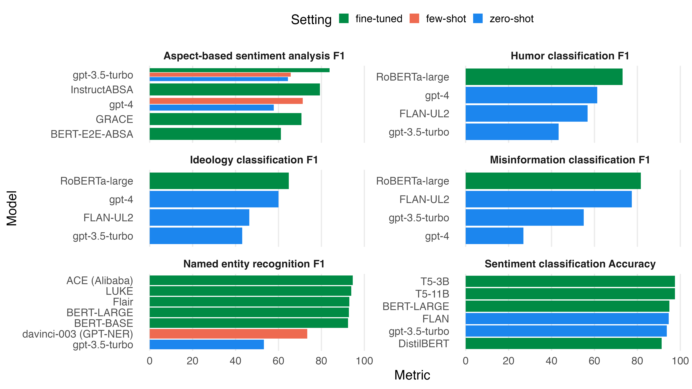

graph LR
A[Raw data] --> B[Few-shot prompt]
C[4 to 10 examples] --> B
B -->|Instruct| D[LLM]
D -->|Predict| E[Labels]
E -->|Manual check| F[Corrected labels]
F -->|Train| G[Efficient model]
With the attention on new LLM releases, it’s easy to forget that correctly labeled examples are still a critical factor for accuracy in most NLP tasks. I think they’re the best source of competitive advantage for most teams. Labeled examples will be useful in conjunction with any model that comes out.
High quality, human-labeled examples are aptly called “gold standard”. This guide will help you accumulate and refine this treasure. It’s based on my five years of experience collecting and refining labeled data for NLP projects, plus a review of the literature.
Fine-tuned models outperform few-shot and zero-shot approaches
Zero-shot and few-shot prediction with LLMs promises to let you skip the labeling and training. Just give the model a few examples and it’ll figure out the rest. This is great for a proof of concept, but how do you know that the labels it gives are correct? Checking individual examples by hand is helpful, but not enough proof. Even if the model doesn’t need finetuning, you’ll need at least a test set to evaluate on.
For classic NLP tasks like text classification, named entity recognition and sentiment analysis, fine-tuned models are still by far the most accurate. This is shown in the benchmarks below. Fine-tuned models perform best across all tasks, followed by few-shot instructed models. Zero-shot performance is the least accurate.

Benchmarks were done by Ziems et al. (2023), Qin et al. (2023), Wang et al. (2023) and Simmering and Huoviala (2023).
Ways to get training data
I hope that I convinced you that training data is still relevant. So how to acquire it?
Public sources
First, check if there’s a public dataset that fits your needs. Here are some places to look:
- Huggingface Hub features more than 100,000 free datasets.
- Kaggle has more than 50,000 free datasets.
- Papers with Code has more than 2,000 text datasets, covering all popular NLP benchmarks.
- data.world has 72 free NLP datasets.
- nlp-datasets Github repository has a curated list of free NLP datasets.
If the dataset is popular you may also find pre-trained models for it on Huggingface. They can give you an idea of the accuracy you can expect to reach and the difficulty of the examples. That’s useful information even if you train your own model.
The majority of public NLP datasets are in English. It may be possible to translate a dataset to your language. DeepL and other translation APIs are affordable. Try it with some examples and see if the translations are good enough.
Using natural labels
Natural labels are signals that are already present in the data. They can be used to train a model without any human labeling. Here are some examples:
- Star ratings for reviews are a signal for sentiment analysis.
- Positive / negative feedback for support answers is a signal for customer satisfaction.
- The number of upvotes, likes and shares for social media posts is a signal for popularity.
- The upvotes for question answers on Stack Overflow is a signal for correctness.
- Open rate of emails is a signal for interest of the subject line.
Perhaps there is a dataset in your organization that has natural labels for the task you want to solve.
Labeling by hand
If you’re not lucky enough to find a public dataset or natural labels, creating your own dataset is the way to go. To go beyond a few thousand examples, a team of labelers is necessary. In any case, I suggest you start by labeling a few examples yourself. This will give you a good understanding of the task.
Here are some points to consider when creating a labeled dataset, whether in a team or alone:
- Annotation guide: Write a detailed annotation guide with examples. This is a living document that gets updated with details and examples throughout the project.
- Iterate on the rules: Figuring out clear rules is the number one priority at the start. Discuss unclear examples with the team and refine the annotation guide. It can be necessary to change a rule and re-label the examples done until then. The cost increases as the project progresses.
- Skip the weirdest examples: User generated internet content can be wild in terms of content and grammar. It can be better better to skip the weirdest examples than to try to label them. They’re more likely to confuse your model than help it learn and it’s unlikely that they’ll be encountered in practice.
- Quality control: Double annotation and analysis of inter-annotator reliability is a key technique for correct annotation from a team.
- Labeling tool: Good labeling UI and workflow makes a big difference in productivity and quality. It’s worth investing the time to find the right tool and configure it optimally. The tool should also make it easy look at the examples that were already annotated and fix errors.
- Simplify the task: Have reasonable expectations for what a labeler can do. For example, correctly using 20 different labels in a text classification task is not realistic. It’s too easy to forget one of them. Binary labeling is easier and it can be worth it to split a task into subtasks that use fewer labels.
- Onboarding: When a new labeler starts, have a one-to-one onboarding session in which you label some examples together. This is often much more effective than reading the guide. It’s also an opportunity to teach efficient use of the labeling tool.
- Quality over quantity: A small, high quality dataset is preferable to a large, low quality dataset. Falsely labeled examples are misleading for the model and for evaluation. Plus, they increase the time and cost for training.
- Diminishing rates of return: Check the difference that adding more examples to the training set makes on model performance. You can do this by training your model on varying amounts of your labeled data, e.g. with 80%, 90% and 100%. If the last 10% of labeled data make a clear difference, keep annotating more data.
- You get what you pay for: When choosing a contractor or full labeling service, ask for inter-annotator reliability and how labelers are instructed and whether they’re native speakers for the language of the task.
GPT-4 is more accurate than low-quality labeling services
Törnberg (2023) and Gilardi, Alizadeh, and Kubli (2023) compared labeling accuracy of GPT-4 with labels created by Amazon Mechanical Turk workers. They found that GPT-4 with a zero-shot instruction was more accurate on tweet text classification tasks. As a buyer of labeling services, a low-quality service may be a worse deal than using an LLM to label the examples (see next section). Hence, it’s only worth using a labeling service if it’s high quality. The ideal solution is a team of experienced labelers that communicate well, refine the annotation guide and use a highly efficient labeling tool.
Synthetic data / labels
The most capable LLMs like GPT-4 can solve many NLP problems with decent accuracy with a few-shot example prompt. You can kickstart a project by letting it label examples and then training your smaller, more efficient model on them. Laurer (2024) provides a great deep dive into this approach and its efficiency benefits.
Experiment with the prompt and the examples to get the best performance. An annotation guide with examples as described in the previous section is a great starting point for an effective prompt.
If the model’s few-shot accuracy isn’t good enough, check the examples and correct the labels by hand. The human-in-the-loop step is required to get proper “gold standard” data. It’s still faster than labeling from scratch.
Active learning
graph LR
A[Model] -->|Predict| B[Label]
B -->|Prioritize low confidence predictions| C[Human check]
C -->|Train| A
With active learning, the model is trained incrementally as new examples are labeled. A human labeler is presented with the examples that the model is most uncertain about and labels them. This maximizes labeling productivity and also gives insight into the model’s weaknesses. The tool Prodigy by Explosion AI was a pioneer in this area and is still a popular choice.
Improving your labeled data
“The biggest alpha in AI is actually looking at your data” - Mark Tenenholtz on X
Better training data makes everything easier, without adding complexity to the model, your code or your infrastructure. There’s no substitute for high quality data. Here are some ways to improve your labeled data:
Stare at the data
Ultra simple, but effective. Look at the examples and labels, check that they conform to the annotation guide. Think about what the model will learn from them. This is a high-value activity, worthy of a senior engineer’s time. It doesn’t scale, but it’s worth doing every now and then.
Perform all standard checks
Here are some standard questions that are always worth asking about your data:
- Is your training data as diverse as the data you’ll encounter in practice? For example, if you’re doing fake news detection, do you have examples from all political sides?
- Are the predicted classes balanced, and if not, does your training and evaluation handle imbalance properly? For example, star ratings for reviews are often biased towards 5 stars.
- Do you version your data along with the trained machine learning models? This is critical for reproducibility and debugging.
- Do the labels have clear and non-overlapping definitions?
- Does the dataset contain outliers or unrealistic values? For example, a review with more than 5 stars.
- Are there any duplicates in the data?
- Is there overlap between the training and evaluation data?
Fix errors in training data by analyzing wrong predictions
Mistaken labels are poison for your model. It learns wrong rules or gets falsely penalized for correct predictions. How do you find and fix them? The model can help with that! One way to find training examples that may be wrong is to train a model on the examples and then run inference on them. If the model gets the label wrong even after having seen it during training, the example may be wrong. The model learned the rule from the other examples, but this example doesn’t follow it. Check those examples and fix the label where necessary.
Add high-signal examples
Labels for difficult examples are a stronger signal than labels for easy examples. Once the model has figured out the basic labeling rules from general examples, it doesn’t have as much to learn from them anymore. You can identify difficult examples by checking the model’s confidence when predicting their answers. Classification models typically return a probability distribution over labels, and LLMs can provide next-token probabilities. Label the examples that have a more uniform distribution, meaning low confidence in the chosen solution. These examples will also help you find edge cases for the annotation guide.
Data augmentation
You can turn one example into many by slightly changing the wording while keeping the label. Chaudhary (2020) offers a visual overview of techniques, including:
- Lexical substitution: Replace words with synonyms.
- Back translation: Translate the text to another language and back.
- Text surface transformation: Contract expressions e.g. “I am” -> “I’m”.
- Random noise injection: Adding spelling mistakes, shuffling sentences, randomly removing words.
- Generative methods: Use a generative model to create new examples similar to the original.
These variations of the same example can improve robustness and generalization of the model. They can also help to balance the classes. However, they are less valuable than real examples. Only use them for the training set, not for the test set and run experiments to see if they actually improve performance or just slow down training.
Models come and go, data is forever
New models are released every week and we seem to have a revolution in model architecture about every 3 years. It can be exhausting to keep up, especially if your goal is to serve a customer need rather than conduct research. If you find yourself in this position, prioritizing training and evaluation data over modeling is a good strategy. Your labeled data will likely be compatible with any model that will come out. Even if the model doesn’t need to be trained, it’ll still be good to have an accurate evaluation dataset. By keeping your code as model-agnostic as possible you can ride the waves of new models coming out, reaping the performance improvements, with little model customization on your part. Just plug in the new model and combine it with your real treasure, the labeled data.
References
Chaudhary, Amit. 2020. “A Visual Survey of Data Augmentation in NLP.” https://amitness.com/2020/05/data-augmentation-for-nlp/.
Gilardi, Fabrizio, Meysam Alizadeh, and Maël Kubli. 2023. “ChatGPT Outperforms Crowd Workers for Text-Annotation Tasks.” Proceedings of the National Academy of Sciences 120 (30): e2305016120.
Laurer, Moritz. 2024. “Synthetic Data: Save Money, Time and Carbon with Open Source.” https://huggingface.co/blog/synthetic-data-save-costs.
Qin, Chengwei, Aston Zhang, Zhuosheng Zhang, Jiaao Chen, Michihiro Yasunaga, and Diyi Yang. 2023. “Is ChatGPT a General-Purpose Natural Language Processing Task Solver?” arXiv Preprint arXiv:2302.06476.
Simmering, Paul F, and Paavo Huoviala. 2023. “Large Language Models for Aspect-Based Sentiment Analysis.” arXiv Preprint arXiv:2310.18025.
Törnberg, Petter. 2023. “Chatgpt-4 Outperforms Experts and Crowd Workers in Annotating Political Twitter Messages with Zero-Shot Learning.” arXiv Preprint arXiv:2304.06588.
Wang, Shuhe, Xiaofei Sun, Xiaoya Li, Rongbin Ouyang, Fei Wu, Tianwei Zhang, Jiwei Li, and Guoyin Wang. 2023. “Gpt-Ner: Named Entity Recognition via Large Language Models.” arXiv Preprint arXiv:2304.10428.
Ziems, Caleb, Omar Shaikh, Zhehao Zhang, William Held, Jiaao Chen, and Diyi Yang. 2023. “Can Large Language Models Transform Computational Social Science?” Computational Linguistics, 1–53.